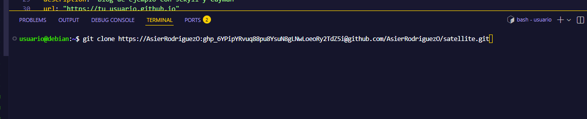
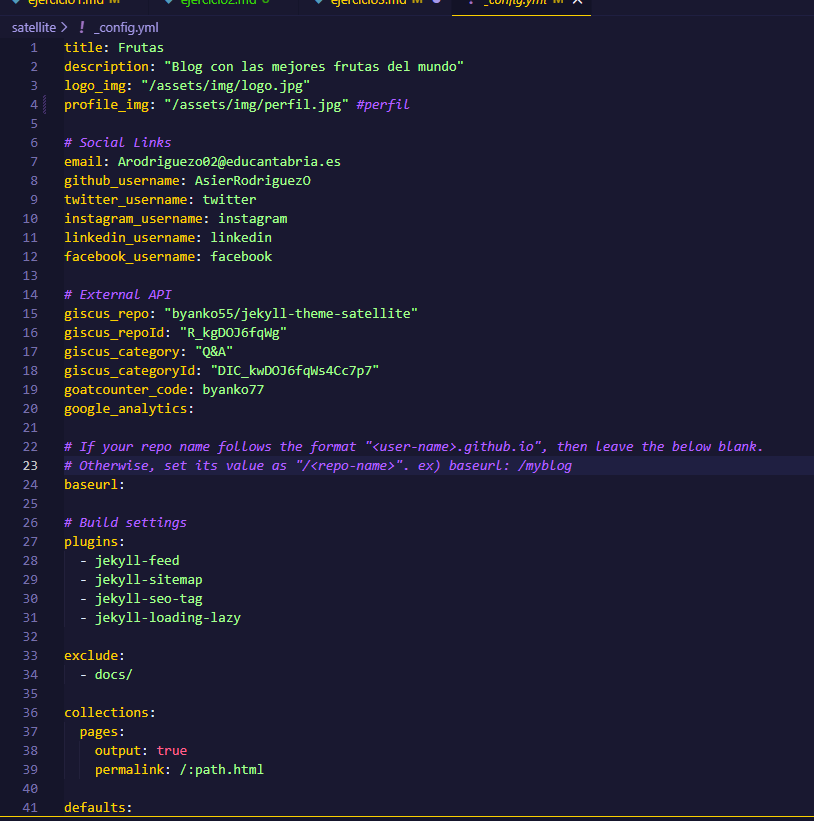
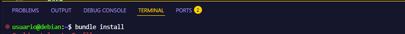
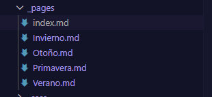
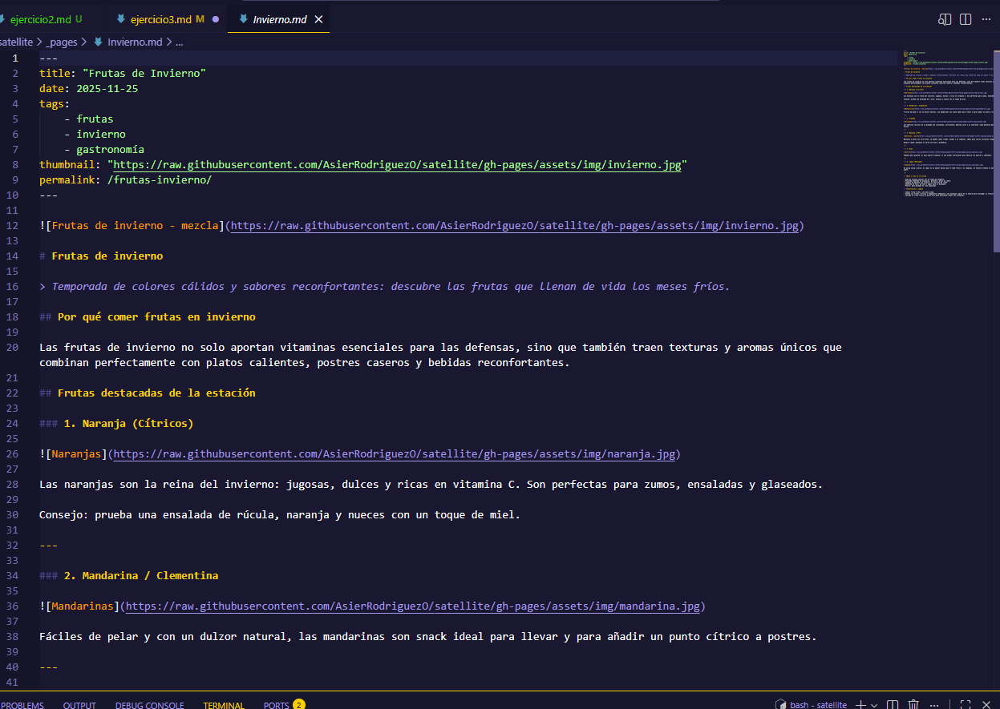
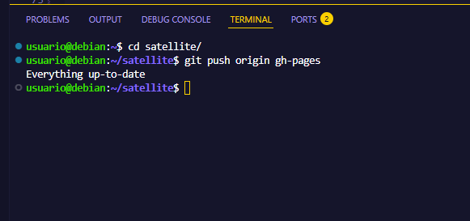
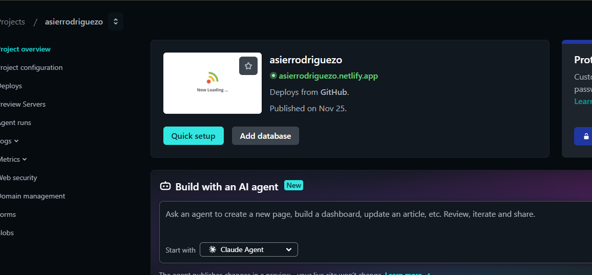

EJERCICIO 3 — Importar y desplegar un tema Jekyll (tema elegido: satellite) en Netlify
1) Elección del tema
He elegido jekyll-theme-satellite por ser un tema ligero, gratuito y fácil de personalizar.
Información del tema elegido:
2) Preparar el repositorio localmente (crear sitio Jekyll y usar el tema)
- Bajamos el repositorio a local
bit clone url + token

- Modifica
_config.ymlpara usar el tema y personalizar datos básicos. Ejemplo mínimo:
title: "Asier - Tema Cayman"
email: "Arodriguezo02@gmail.com"
description: "Blog de ejemplo con Jekyll y Cayman"
url: "https://tu_usuario.github.io"
baseurl: "" # si es sitio de usuario; si es sitio de proyecto p. ej. "/mi-proyecto"
theme: jekyll-theme-cayman
author:
name: "Asier Rodriguez"

- Instala dependencias con Bundler:
bundle install

3) Personalizar la página principal y crear páginas y posts
Ejemplos y recomendaciones para personalizar contenido. En los ejemplos usaré la temática: "Pequeña biblioteca local" (una temática distinta a los ejercicios 1 y 2).
En este tema no es necesario editar index.html, ya que el tema satellite genera la página principal automáticamente con los posts.
Creamos los posts (artículos del blog van en la carpeta _pages/):


4) Subir a GitHub y desplegar en Netlify/GitHub Pages:
git remote add origin https://github.com/tu_usuario/satellite.git
git add . && git commit -m "Personalización"
git push -u origin gh-pages

En Netlify, conecta el repo y usa bundle exec jekyll build como comando de build y _site como carpeta de publicación.
Para que funcione la pagina de netlify hay que registrarse en este con la cuenta de github y darle permisos a netlify para que pueda acceder a los repositorios de github.
una vez hecho esto hay que crear un nuevo sitio en netlify y seleccionar el repositorio que queremos desplegar.

con esto ya estaria desplegado el sitio en netlify.